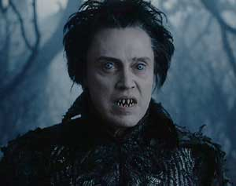

POSTS
Christopher Walken 출연작 중 본 영화


‘크리스토퍼 워큰’이라고도 부르고 ‘크리스토퍼 월켄’이라고도 불린다. 워큰 쪽은 영어를 좀 아시는 분들이 주로 쓰신다. 나는 물론 월켄이 편하다.
이분은 악역, 그것도 조연으로, 상당히 다작을 했다. 인상이 넘 강렬해서 그의 이름은 몰라도 왠간한 영화팬이라면 얼굴은 기억한다.
- 디어 헌터 (The Deer Hunter) - 넘 오래되서 기억이 안난다. 그가 출연했었다는건 이후에 알았다.
- 데드 존 (The Dead Zone) - 유일하게 그가 웃는걸 볼 수 있었던 영화. 심리 스릴러물이라고나 할까
- 닉 오브 타임 (Nick Of Time) - 역시 악역이다.
- 슬리피 할로우 (Sleepy Hollow) - 역시 악역?
- 와일드 게임 (The Wild Side, 1995) - 역시 악역. 앤헤이시, 조안 첸도 같이 출연한 영화. 당시 주목받던 감독의 작품이라는데. 배우들의 연기 빼고는 볼게 없는 영화. 이후에 감독은 영화가 개판이 된것을 비관하여 자살했다고 한다. -.-….